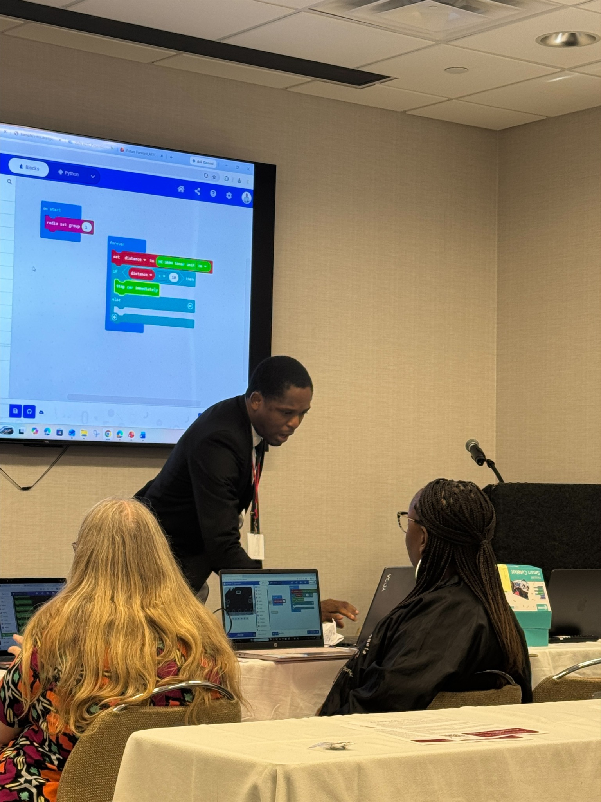
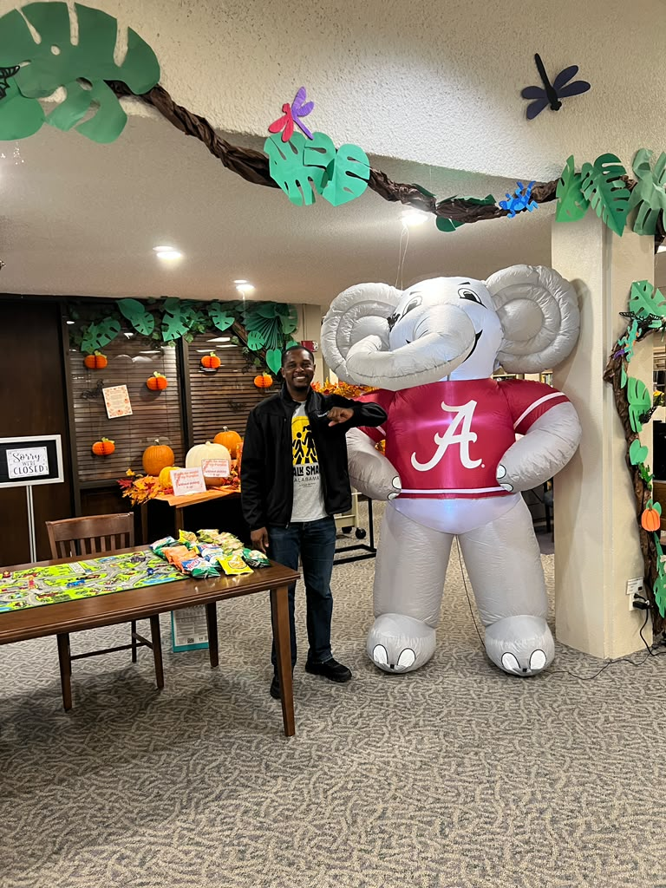

Instructional technology · Transportation STEM · K–12 education
Translating emerging transportation technologies into meaningful K–12 STEM learning experiences.
I connect mathematics, science, computing, and transportation research to design learning experiences that help young people understand the systems shaping their future.
SenseObserve a system
ConnectInterpret information
DecideSolve a problem
MoveTest the outcome

Professional introduction
Teaching experience shaped by evidence and context
I am an instructional technology scholar, educator, and curriculum designer with a background in statistics, mathematics, computer science, and education. My work focuses on translating emerging transportation technologies such as autonomous vehicles, connected vehicles, intelligent transportation systems, and electric mobility into accessible K–12 STEM learning experiences.
Through instructional design, curriculum development, research, and outreach, I seek to increase students' awareness, curiosity, and foundational understanding of transportation-related STEM fields and careers.
My professional experience includes teaching Mathematics, Further Mathematics, and Physics; serving in academic leadership; supporting teachers with technology adoption; and creating learning experiences that make abstract ideas visible. I now bring those experiences into transportation STEM research and outreach.
Philosophy of instructional technology
Technology earns its place by improving learning
I do not begin with a tool. I begin with the learner, the concept, and the barrier that prevents meaningful understanding.
Learning is active and social
Learners build understanding by connecting new information with prior knowledge, participating actively, explaining ideas, learning with others, receiving timely feedback, and gradually taking responsibility for their learning.
Design must respond to variability
Learners differ in prior knowledge, confidence, language, interests, access, and pace. Instruction should offer meaningful ways to engage, access information, and demonstrate understanding without lowering the learning goal.
Technology must solve a real problem
A tool is valuable when it removes a barrier, represents an abstract idea, supports practice or collaboration, makes student thinking visible, or provides an accessible way to show learning.
Evidence guides continuation
I separate confidence, repeated use, and evidence of student learning. A tool should be adopted, adapted, supported further, or discontinued according to what the evidence shows.
My instructional technology decision rule
Adopt when a tool addresses a verified learning need, fits the content and strategy, is accessible, and produces promising learning evidence in a pilot.
Adapt when learning is promising but barriers remain in instructions, cognitive load, access, culture, assessment, or accessibility.
Support further when the tool is instructionally appropriate but confidence, infrastructure, repeated use, or implementation support is weak.
Discontinue when repeated use does not improve learning, serious ethical or access problems remain, or a simpler alternative works equally well or better.

Theory into practice
Making invisible systems understandable
In physics, I learned that a hands-on circuit can show a measurement without always revealing the idea behind it. A simulation can make current movement, voltage, and resistance visible, while the physical investigation connects the model to the real circuit.
I apply the same principle to transportation STEM: pair clear models with authentic problems, guided investigation, collaboration, and reflection.
Selected design projects
Interactive resources shaped by learning needs
Each project begins with a clear learning problem, combines theory with practical design decisions, and includes accessibility or low-resource considerations.
Transportation STEM
Micro:bit and Cutebot Learning Activities
Hands-on activities that connect coding, sensors, obstacle detection, and automated decision-making to concepts used in emerging transportation systems.
- Physical computing
- Problem solving
- K–12 STEM
Module 3 · OER Remix
Crop Resilience Challenge
An AI-enhanced interactive resource remixed from openly licensed content to support decisions about crop adaptation and drought resilience.
Open the resource (opens in a new tab)Module 4 · Framework Application
Boyle's Law Design Lab
An accessible investigation that applies TPACK, SAMR, and UDL to help beginning science learners explain the inverse pressure–volume relationship.
Open the resource (opens in a new tab)Module 5 · Technology Adoption
Purposeful AI Readiness Lab
A UTAUT-informed diagnostic resource that helps Nigerian secondary schools identify practical support needs for responsible generative AI adoption.
Open the resource (opens in a new tab)Outreach, leadership, and impact
Learning extends beyond the classroom
My work brings together instructional design, community service, teacher leadership, and transportation safety outreach.



OPSAM Educational Foundation
I founded OPSAM Educational Foundation to support young learners through academic activities, mentoring, learning resources, exposure to opportunities, and educational assistance.
Learn about the foundation (opens in a new tab)Academic leadership
My experience as a Vice Principal Academic taught me that successful technology use depends on policy, leadership, teacher participation, infrastructure, and sustained support—not only initial acceptance.
Teaching impact
One of my proudest outcomes came after three years of work with senior secondary students: many achieved A grades across Mathematics, Further Mathematics, and Physics in 2018. Their continued progress remains more meaningful to me than an individual award.
AIL 601 academic portfolio
Evidence of an evolving instructional technology philosophy
The sequence below shows how my thinking developed from learning theory, through framework-informed design, to technology adoption and a coherent philosophy of practice.
-
Module 3
Learning and instructional theories
I connected behaviorism, cognitivism, constructivism, sociocultural theory, motivational theory, and online learning theories to my experience as a mathematics and physics teacher.
-
Module 3
Crop Resilience Challenge
I remixed an OER into an interactive learning experience and documented theory, UDL, responsible AI, accessibility, verification, and licensing decisions.
View artifact (opens in a new tab) -
Module 4
Boyle's Law Design Lab
I used TPACK to select technology, SAMR to judge the degree of task change, and UDL to maintain a common conceptual target while reducing barriers.
View artifact (opens in a new tab) -
Module 5
Purposeful AI Readiness Lab
I applied UTAUT to distinguish technology acceptance from sustained use and designed support recommendations around performance, effort, social influence, and facilitating conditions.
View artifact (opens in a new tab) -
Module 6
Philosophy of Instructional Technology
I synthesized my teaching, leadership, design, and research experiences into an evidence-driven philosophy. The central lesson is simple: technology should be thoughtfully designed, implemented, and evaluated—not selected because it is new.
Portfolio narrative
These artifacts show a clear change in my thinking. I began with a strong belief in active learning, conceptual understanding, practice, collaboration, feedback, and learner accessibility. The course helped me name the theories behind those beliefs and examine their limitations. It also helped me become more deliberate about choosing technology through TPACK, evaluating task change through SAMR, designing for learner variability through UDL, and planning adoption through models such as UTAUT.
My work now treats technology integration as both an instructional and implementation decision. A useful tool must support the learning goal, be usable within the learner's context, respect ethical and accessibility requirements, and produce evidence that justifies its continued use.
Preparation and focus
Interdisciplinary foundations
Education
Doctoral study in instructional technology, supported by graduate preparation in educational technology and qualifications spanning education, mathematics, computer science, and statistics.
Research interests
Transportation STEM education, autonomous and connected vehicles, intelligent transportation systems, electric mobility, AI in education, curriculum design, and technology adoption.
Professional strengths
Instructional design, curriculum development, mathematics and science education, teacher support, academic leadership, outreach, and evidence-informed technology integration.
Curriculum vitae
My CV is currently being updated to reflect recent doctoral study, transportation STEM work, outreach, and design projects.
Request my current CVConnect
Let's design learning that prepares students for the future of mobility.
I welcome conversations about instructional design, curriculum development, transportation STEM outreach, educational research, and industry–school collaboration.